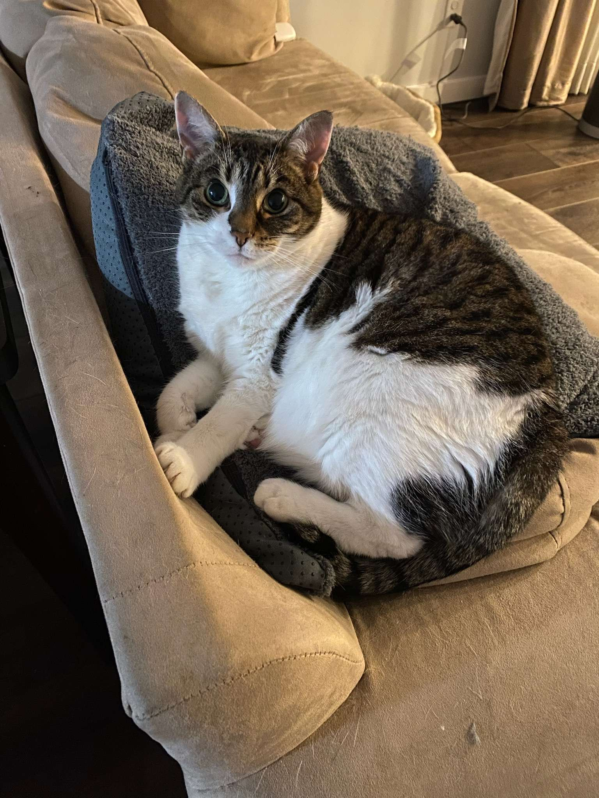
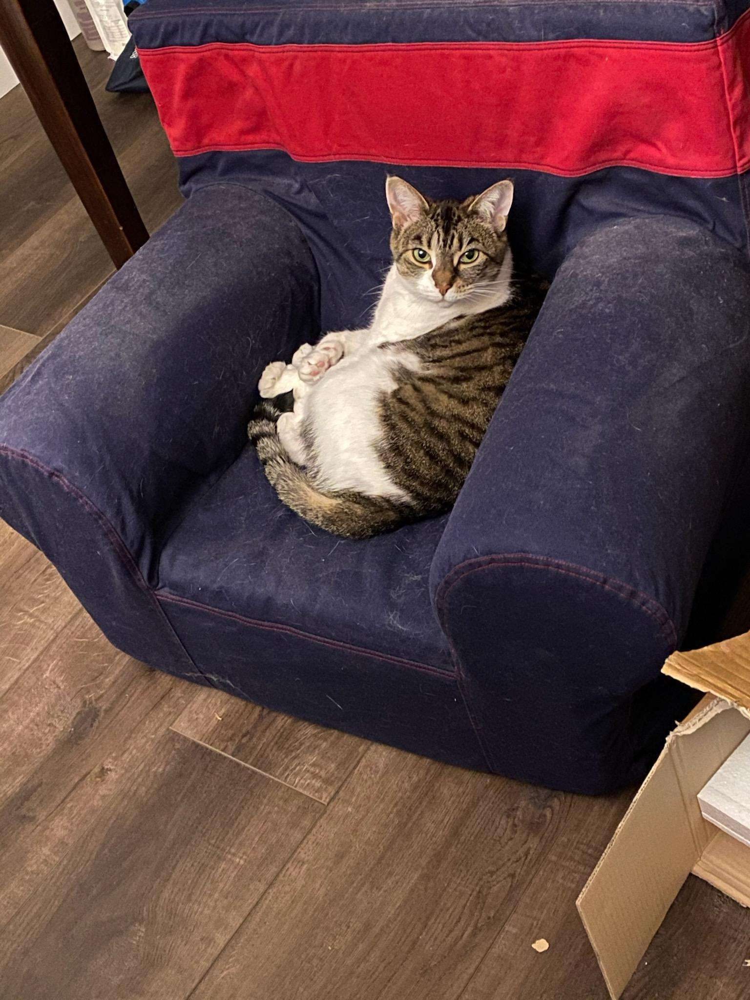
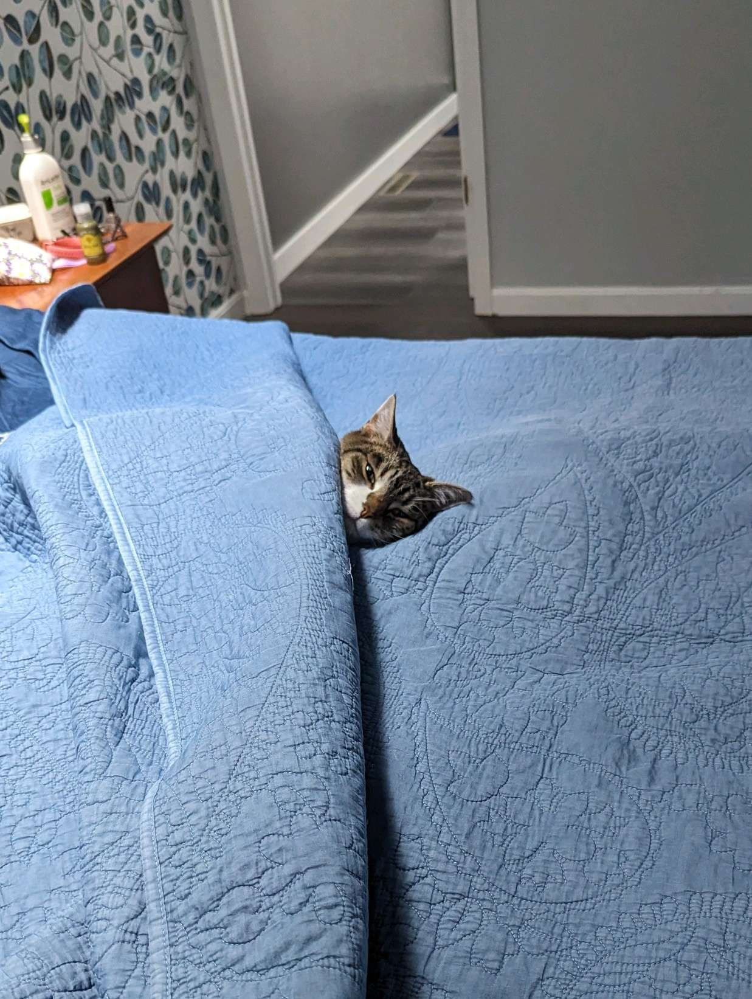
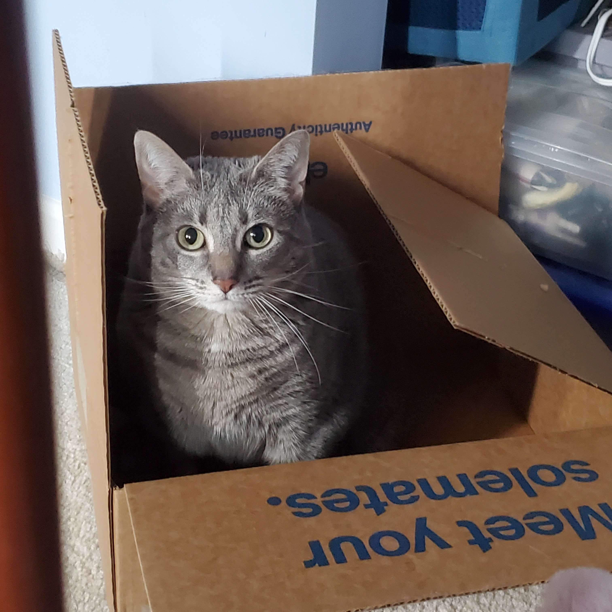
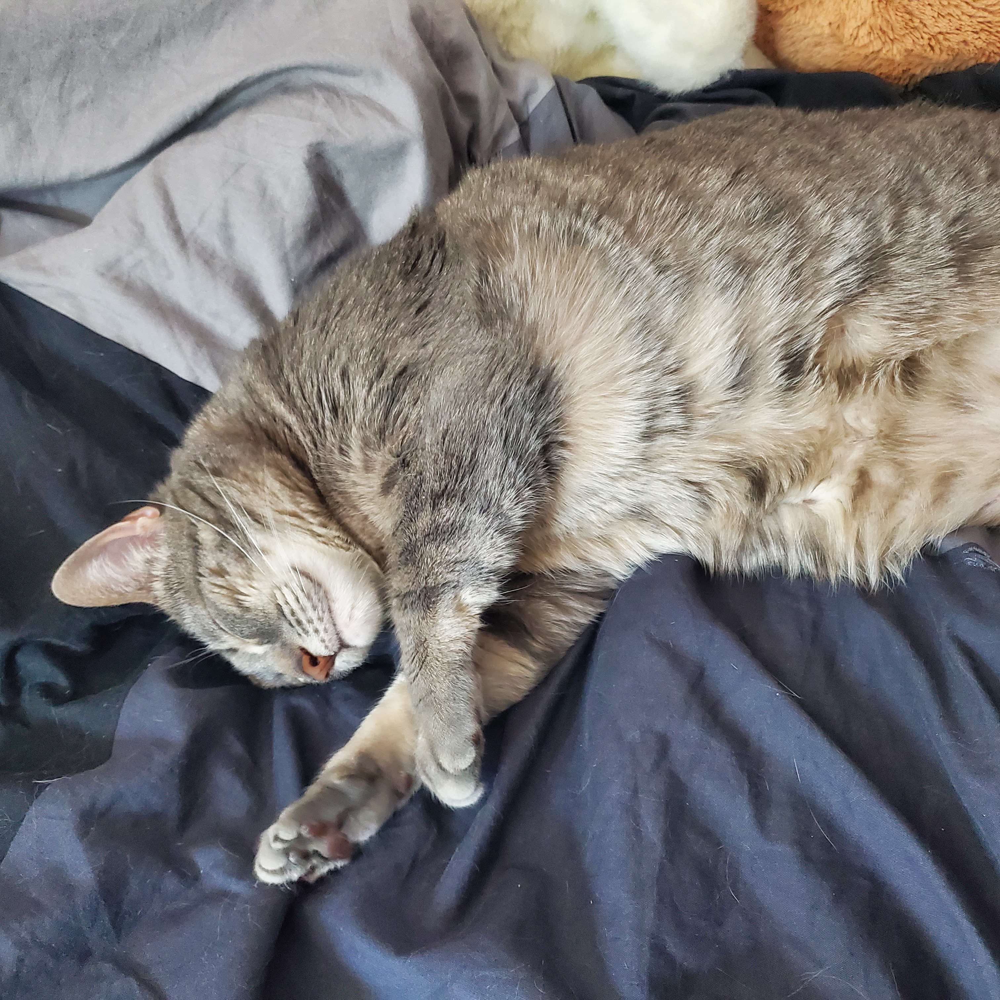
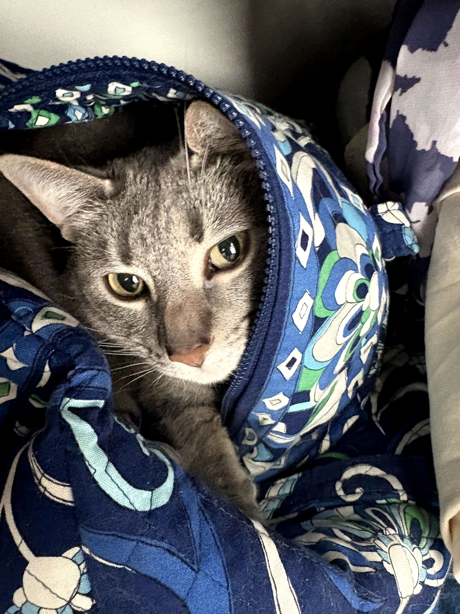

sammy was adopted from a local shelter around may 2015 as a 1 y/o. she is sweet and spends most of her time sleeping. she loves to cuddle. a little princess... yells when she wants something. loves her family, but doesn't like strangers. scared of rain storms. loves to be brushed, rubs her cheeks on brushes and corners of walls.



my beautiful baby girl. technically "my" cat. adopted from a neighbor in may 2019 at 10 months old. her birthday is in july. spent the first 4 years of her life living at my dad's house, but moved to be at my mom's in 2023. despite being raised in a litter, she does not get along with other cats. has an attitude x) will grumble and growl when upset. affectionate at her own pace. not usually a lapcat, but she has her moments! prefers to sit nearby or lean against you.
likes to lick fingers/"groom" you. also enjoys digging at things, making nests in blankets or laying under pillows.


